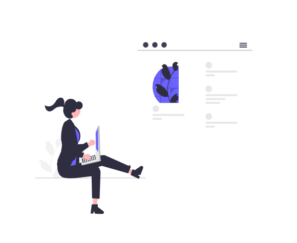
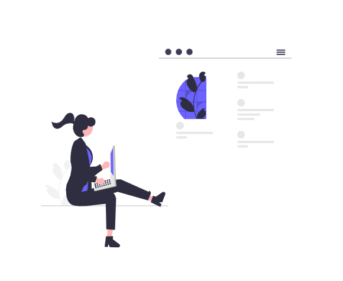

Skills
My skills mentioned in the table are the skills I have acquired through various learning experiences and practical applications. These skills encompass a range of technical skills that I have developed over time.
At present, my primary focus is on front-end development. I am dedicating my efforts to mastering HTML, CSS, and JavaScript, as these are the fundamental technologies required for any front-end developer. By honing these skills, I aim to create visually appealing and user-friendly web interfaces that provide an excellent user experience.
| Skills | Skills |
|---|---|
| Python Programming | JavaScript |
| HTML | CSS |
Learning Journey
The skills of HTML, CSS, and JavaScript are self-taught through doing projects and watching videos and also some online classes. Learning on our own can be challenging at times. However, with dedication and effort, we can become good at what we're studying.
I took an introductory Python course at Addis Ababa University (AAU), which provided me with a solid foundation in programming concepts and practices. However, my learning did not stop there. I am currently enhancing my Python skills through self-study, working on various projects and challenges to deepen my understanding and proficiency in the language.
 
